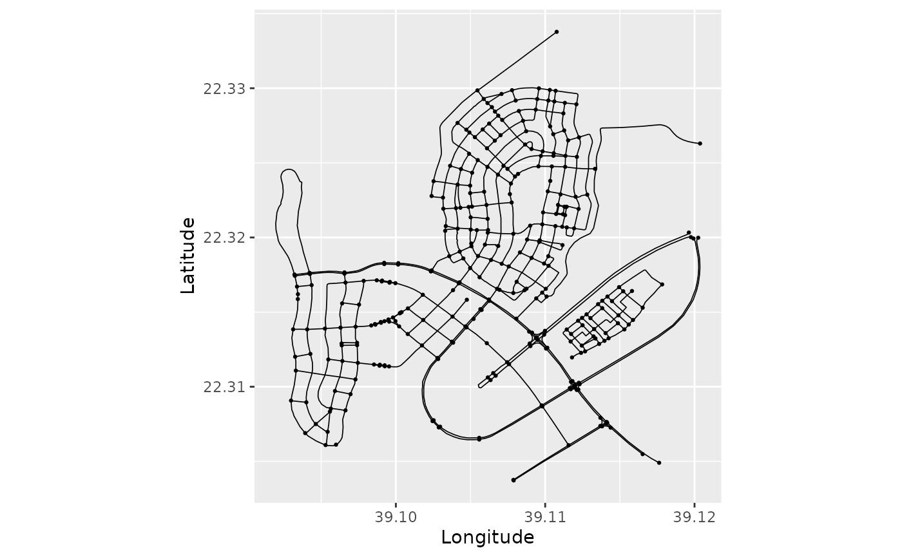
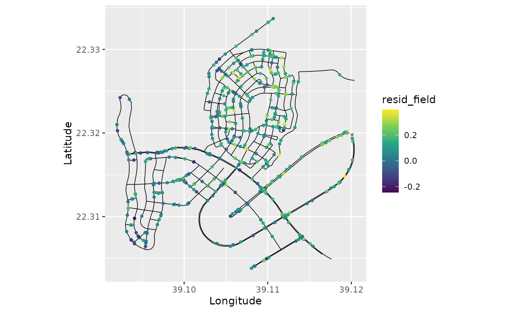
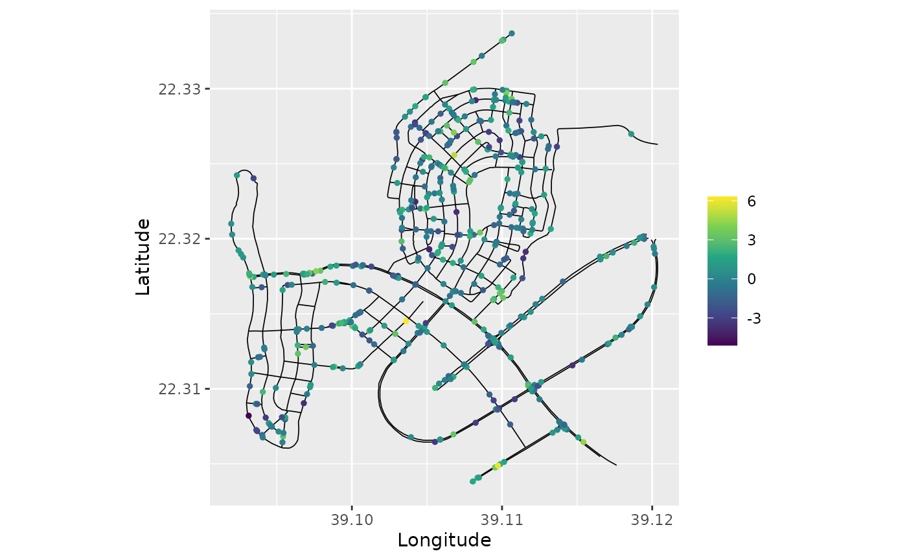

MetricGraph: Random Fields on Metric Graphs
David Bolin, Alexandre B. Simas, and Jonas Wallin
Created: 2022-11-26. Last modified: 2024-08-07.
Source:vignettes/MetricGraph.Rmd
MetricGraph.RmdIntroduction
There has lately been much interest in statistical modeling of data on compact metric graphs such as street or river networks based on Gaussian random fields.
The R package MetricGraph contains
functions for working with data and random fields on compact metric
graphs. The main functionality is contained in the
metric_graph class, which is used for specifying metric
graphs, adding data to them, visualization, and other basic functions
that are needed for working with data and random fields on metric
graphs. The package also implements three types of Gaussian processes on
metric graphs: The Whittle–Matérn fields introduced by Bolin,
Simas, and Wallin (2024) and Bolin,
Simas, and Wallin (2023), Gaussian processes with isotropic
covariance functions Anderes, Møller, and Rasmussen (2020), and
Gaussian models based on the graph Laplacian Borovitskiy et al. (2021).
Basic statistical tasks such as likelihood evaluation and prediction
is implemented for these three types of models in
MetricGraph. Further, the package also contains interfaces
to R-INLA Lindgren and Rue (2015), package available
from http://R-INLA. org/download/
and inlabru Bachl et al. (2019) that facilitates using
those packages for full Bayesian inference of general Latent Gaussian
Models (LGMs) that includes Whittle–Matérn fields on metric graphs.
The package is available to install via the repository https://github.com/davidbolin/MetricGraph.
The following sections describe the main functionality of the package
and summarizes some of the required theory. Section 2 introduces metric
graphs and the metric_graph class, Section 3 shows how to
work with random fields on metric graphs, and Section 4 introduces the
inlabru interface of the package through an application to
real data. For a complete introduction to the functionality of the
package, we refer to the Vignettes available on the package homepage https://davidbolin.github.io/MetricGraph/.
In particular, that contains an introduction to the INLA
interface, the implementation of Whittle–Matérn fields with general
smoothness, and further details and examples for all methods in the
package.
The metric_graph class
A compact metric graph consists of a set of finitely many vertices and a finite set of edges connecting the vertices. Each edge is defined by a pair of vertices and a finite length . An edge in the graph is a curve parametrized by arc-length, and a location is a position on an edge, and can thus be represented as a touple where .
Basic constructions
A metric graph is represented in the MetricGraph package
through the class metric_graph. An object of this class can
be constructed in two ways. The first is to specify the vertex matrix
V and the edge matrix E, and it is then
assumed that all edges are straight lines. The second, more flexible,
option is to specify the object from a SpatialLines object
using the sp package (Bivand,
Pebesma, and Gomez-Rubio 2013).
To illustrate this, we use the osmdata package to
download data from OpenStreetMap. In the following code, we extract the
streets on the campus of King Abdullah University of Science and
Technology (KAUST) as a SpatialLines object:
call <- opq(bbox = c(39.0884, 22.33, 39.115, 22.3056))
call <- add_osm_feature(call, key = "highway",value=c("motorway",
"primary","secondary",
"tertiary",
"residential"))
data <- osmdata_sp(call)
lines <- SpatialLines(data$osm_lines@lines)We can now create the metric graph as follows. In the command we set
the argument longlat = TRUE since the coordinates of the
vertices are given in Longitude and Latitude.
graph <- metric_graph$new(lines, longlat = TRUE)
graph$plot(vertex_size = 0.5)
We can note the warning that the graph is not connected, so let us
create a graph_components object that contains all
connected components as graphs and then extract the largest connected
component to work with
graphs <- graph_components$new(edges = lines, longlat = TRUE)
graph <- graphs$get_largest()
graph$plot(vertex_size = 0)
The graph object now contains all important features of
the graph, such as the vertex matrix graph$V, the number of
vertices graph$nV, the edge matrix graph$E,
the number of edges graph$nE, and the vector of all edge
lengths graph$get_edge_lengths() given in the unit km
(since we specified longlat = TRUE in the construction).
Thus, we can obtain the range of the edge lengths in the unit m as:
range(graph$get_edge_lengths(unit="m")) ## Units: [m]
## [1] 5.650044 2141.415006We will also remove the vertices of degree 2 by using the
prune_vertices() method:
graph$prune_vertices()
graph$plot()
Understanding coordinates on graphs
The locations of the vertices are specified in Euclidean coordinates.
However, when specifying a position on the graph, it is not practical to
work with Euclidean coordinates since not all locations in Euclidean
space are locations on the graph. It is instead better to specify a
location on the graph by the touple
,
where
denotes the number of the edge and
is the location on the edge. The location
can either be specified as the distance from the start of the edge (and
then takes values between 0 and the length of the edge) or as the
normalized distance from the start of the edge (and then takes values
between 0 and 1). The function coordinates can be used to
convert between coordinates in Euclidean space and locations on the
graph. For example the location at normalized distance 0.2 from the
start of the second edge is:
## [,1] [,2]
## [1,] 39.11751 22.31934The function can also be used to find the closest location on the graph for a location in Euclidean space:
## [,1] [,2]
## [1,] 2 0.2517662In this case, the normalized argument decides whether
the returned value should be given in normalized distance or not.
Adding data to the graph
Given that we have constructed the metric graph, we can now add data to it. For further details on data manipulation on metric graphs, see Data manipulation on metric graphs. As an example, let us sample some locations on edges at random and add data to them in the graph:
n.obs <- 10
data <- data.frame(edge_number = sample(1:graph$nE, n.obs, replace=TRUE),
distance_on_edge = runif(n.obs),
y = rnorm(n.obs))
graph$add_observations(data = data, normalized = TRUE)## Adding observations...## The unit for edge lengths is km## The current tolerance for removing distant observations is (in km): 1.07070750299905
graph$plot(data = "y", vertex_size = 0)One should note here that one needs to specify
normalized = TRUE in the function to specify that the
locations are in normalized distance on the edges. If this command is
not set, the distances are interpreted as not being normalized. The
add_observations() function accepts multiple types of
inputs. One scenario that can be common in applications is to have the
data as SpatialPoints objects, and one can then add the
observations as a SpatialPointsDataFrame. To illustrate
this, let us again sample some locations at random on the graph, then
use the function coordinates to transform those to
Longitude Latitude coordinates, which we then use to create a
SpatialPointsDataFrame object which we add to the
graph:
obs.loc <- cbind(sample(1:graph$nE, n.obs, replace=TRUE), runif(n.obs))
obs.lonlat <- graph$coordinates(PtE = obs.loc, normalized = TRUE)
obs <- rnorm(n.obs)
points <- SpatialPointsDataFrame(coords = obs.lonlat,
data = data.frame(y = obs))
graph$add_observations(points)## Adding observations...## The unit for edge lengths is km## The current tolerance for removing distant observations is (in km): 1.07070750299905## Converting data to PtE## This step may take long. If this step is taking too long consider pruning the vertices to possibly obtain some speed up.## [1] y .coord_x .coord_y
## <0 rows> (or 0-length row.names)
graph$plot(data = "y", vertex_size = 0)
If we want to replace the data in the object, we can use
clear_observations() to remove all current data.
Working with functions on metric graphs
When working with data on metric graphs, one often wants to display
functions on the graph. The best way to visualize functions on the graph
is to evaluate them on a fine mesh over the graph and then use
plot_function. To illustrate this procedure, let us
construct a mesh on the graph:
graph$build_mesh(h = 100/1000)
graph$plot(mesh=TRUE)
In the command build_mesh, the argument h
decides the largest spacing between nodes in the mesh. Above we chose
that as 100m which is a bit coarse. So let us reduce the value of
h to 10m and rebuild the mesh:
graph$build_mesh(h = 10/1000)Suppose now that we want to display the function
on this graph. We then first evaluate it on the vertices of the mesh and
then use the function plot_function to display it:
lon <- graph$mesh$V[, 1]
lat <- graph$mesh$V[, 2]
f <- lon - lat
graph$plot_function(X = f, vertex_size = 0, edge_width = 0.5)
Alternatively, we can set plotly = TRUE in the plot
command to get a 3D visualization of the function by using the
plotly (Sievert 2020)
package. When the first argument of plot_function is a
vector, the function assumes that the values in the vector are the
values of the function evaluated at the vertices of the mesh. As an
alternative, one can also provide the first argument as a matrix
consisting of the triplets
,
where
denotes the edge number,
the location on the edge, and
the value at that point.
Random fields on metric graphs
Having defined the metric graph, we are now ready to specify Gaussian processes on it. In this section, we will briefly cover the three main types of Gaussian processes that are supported. Be begin by the main class of models, the Whittle–Matérn fields, then consider Gaussian processes with isotropic covariance functions, and finally look at discrete models based on the graph Laplacian.
Whittle–Matérn fields
The Gaussian Whittle–Matérn fields are specified as solutions to the stochastic differential equation on the metric graph . We can work with these models without and approximations if the smoothness parameter is an integer, and this is what we focus on in this vignette. For details on the case of a general smoothness parameter, see Whittle–Matérn fields with general smoothness.
Sampling
As an example, let us simulate the field on the graph using . To do so, we again draw some locations at random, then sample the field at these locations and plot the result
sigma <- 1.3
range <- 0.15 # range parameter
sigma_e <- 0.1
n.obs <- 200
obs.loc <- cbind(sample(1:graph$nE, n.obs, replace=TRUE), runif(n.obs))
u <- sample_spde(range = range, sigma = sigma, alpha = 1,
graph = graph, PtE = obs.loc)
graph$clear_observations()
graph$add_observations(data = data.frame(edge_number = obs.loc[, 1],
distance_on_edge = obs.loc[, 2],
u = u),
normalized = TRUE)## Adding observations...## The unit for edge lengths is km## The current tolerance for removing distant observations is (in km): 1.07070750299905
graph$plot(data = "u", vertex_size = 0)
We can also sample the field at the mesh on the graph as follows:
u <- sample_spde(range = range, sigma = sigma, alpha = 1,
graph = graph, type = "mesh")
graph$plot_function(X = u, vertex_size = 0, edge_width = 0.5)
Since , these sample paths are continuous but not differentiable. To visualize the correlation structure of the field, we can compute and plot the covariances between some point and all other points in the graph as follows:
C <- spde_covariance(c(200, 0.1), range = range, sigma = sigma, alpha = 1,
graph = graph)
graph$plot_function(X = C, vertex_size = 0, edge_width = 0.5)
To obtain a field with differentiable sample paths, we can change to in the code above.
Inference
In the following examples we will consider models without replicates. Please, see the Gaussian random fields on metric graphs vignette for examples with replicates.
Suppose that we have data of the form where are observation locations, lon and lat are the longitude and latitude of these locations, are some regression coefficients, and are independent centered Gaussian variables representing measurement noise.
Let us create such observations, clear the current data in the graph, and finally add the data on the graph:
sigma <- 2
range <- 0.2 # range parameter
sigma_e <- 0.1
n.obs.1 <- 400 # all edges
n.obs.2 <- 100 # long edges
n.obs <- n.obs.1 + n.obs.2
obs.loc <- cbind(sample(1:graph$nE, n.obs.1, replace=TRUE), runif(n.obs.1))
# Let us now add some locations on long edges:
long.edges <- graph$edge_lengths > 0.5
obs.loc <- rbind(obs.loc, cbind(sample(which(long.edges), n.obs.2, replace=TRUE), runif(n.obs.2)))
u <- sample_spde(range = range, sigma = sigma, alpha = 1,
graph = graph, PtE = obs.loc)
beta0 = -1
beta1 = 1
beta2 = 2
lonlat <- graph$coordinates(PtE = obs.loc)
scaled_lonlat <- scale(lonlat)
y <- beta0 + beta1 * scaled_lonlat[, 1] + beta2 * scaled_lonlat[, 2] + u + sigma_e*rnorm(n.obs)
data <- data.frame(edge_number = obs.loc[, 1],
distance_on_edge = obs.loc[, 2],
lon = scaled_lonlat[, 1],
lat = scaled_lonlat[, 2],
y = y)
graph$clear_observations()
graph$plot(X = y, X_loc = obs.loc, vertex_size = 0)
graph$add_observations(data = data, normalized = TRUE)## Adding observations...## The unit for edge lengths is km## The current tolerance for removing distant observations is (in km): 1.07070750299905
Our goal now is to fit a linear mixed-effects model on this data
assuming a Whittle-Mat'ern latent model with
.
To this end, we can use the graph_lme() function.
If we do not specify the model, it will fit a linear regression model. So, let us first fit a simple linear regression model to illustrate:
res_lm <- graph_lme(y ~ lon + lat, graph = graph)We can get the summary:
summary(res_lm)##
## Linear regression model
##
## Call:
## graph_lme(formula = y ~ lon + lat, graph = graph)
##
## Fixed effects:
## Estimate Std. Error t value Pr(>|t|)
## (Intercept) -1.13093 0.06936 -16.31 <2e-16 ***
## lon 0.93551 0.07075 13.22 <2e-16 ***
## lat 2.04390 0.07075 28.89 <2e-16 ***##
## No random effects.##
## Measurement error:
## std. dev
## 1.550846
## ---
## Signif. codes: 0 '***' 0.001 '**' 0.01 '*' 0.05 '.' 0.1 ' ' 1
##
## Log-Likelihood: -927.3651Let us now fit the linear mixed-effects model with a Whittle-Mat'ern
latent model with
.
To this end, we can either specify the model argument as
'alpha1' or as the following list:
list(type = 'WhittleMatern', alpha = 1). The list makes it
easier to understand which model is being chosen as a random effect,
however, it makes it longer, and less convenient, to write. Let us use
the simplified form:
res <- graph_lme(y ~ lon + lat, graph = graph, model = 'WM1')Let us get the summary of the result:
summary(res)##
## Latent model - Whittle-Matern with alpha = 1
##
## Call:
## graph_lme(formula = y ~ lon + lat, graph = graph, model = "WM1")
##
## Fixed effects:
## Estimate Std.error z-value Pr(>|z|)
## (Intercept) -1.1014 0.1181 -9.324 < 2e-16 ***
## lon 0.9511 0.1201 7.922 2.34e-15 ***
## lat 1.9748 0.1232 16.035 < 2e-16 ***
##
## Random effects:
## Estimate Std.error z-value
## tau 0.114099 0.005449 20.941
## kappa 11.506072 1.742238 6.604
##
## Random effects (Matern parameterization):
## Estimate Std.error z-value
## sigma 1.82701 0.09598 19.036
## range 0.17382 0.02583 6.729
##
## Measurement error:
## Estimate Std.error z-value
## std. dev 0.07595 0.04519 1.681
## ---
## Signif. codes: 0 '***' 0.001 '**' 0.01 '*' 0.05 '.' 0.1 ' ' 1
##
## Log-Likelihood: -794.3335
## Number of function calls by 'optim' = 26
## Optimization method used in 'optim' = L-BFGS-B
##
## Time used to: fit the model = 44.217 secsWe can obtain additional information by using
glance():
glance(res)## # A tibble: 1 × 9
## nobs sigma logLik AIC BIC deviance df.residual model alpha
## <int> <dbl> <dbl> <dbl> <dbl> <dbl> <dbl> <chr> <dbl>
## 1 500 0.0760 -794. 1601. 1626. 1589. 494 WhittleMatern 1We will now compare with the true values of the random effects:
sigma_e_est <- res$coeff$measurement_error[[1]]
sigma_est <- res$matern_coeff$random_effects[1]
range_est <- res$matern_coeff$random_effects[2]
results <- data.frame(sigma_e = c(sigma_e, sigma_e_est),
sigma = c(sigma, sigma_est),
range = c(range, range_est),
row.names = c("Truth", "Estimate"))
print(results)## sigma_e sigma range
## Truth 0.10000000 2.00000 0.2000000
## Estimate 0.07595015 1.82701 0.1738213Given these estimated parameters, we can now do kriging to estimate the field at locations in the graph. As an example, we now obtain predictions on the regular mesh that we previously constructed. First, we obtain the covariates on the mesh locations.
Now, we can compute the predictions for . First, let us compute the posterior mean for the field at the observation locations and plot the residuals between the posterior means and the field:
pred_u <- predict(res, newdata = data, normalized = TRUE)
pred_u$resid_field <- pred_u$re_mean - u
pred_u <- graph$process_data(data = pred_u, normalized=TRUE)
pred_u %>% graph$plot(data = "resid_field", vertex_size = 0)
We can also obtain predictions by using the augment()
function:
Let us first plot the predictions for the field, then the fitted values:
pred_aug <- augment(res, newdata = data, normalized = TRUE)
pred_aug %>% graph$plot(data = ".random", vertex_size = 0)
Let us now plot the fitted values along with the observed values:
pred_aug %>% graph$plot(data = ".fitted", vertex_size = 0)
Let us now obtain predictions of the field on a mesh of equally
spaced nodes on the graph. First, let us create the mesh and
data.frame:
graph$build_mesh(h = 50/1000)
lonlat_mesh <- graph$coordinates(PtE = graph$mesh$VtE)
scaled_lonlat_mesh <- scale(lonlat_mesh,
center = attr(scaled_lonlat, "scaled:center"),
attr(scaled_lonlat, "scaled:scale"))
data_mesh_pred <- data.frame(lon = scaled_lonlat_mesh[,1],
lat = scaled_lonlat_mesh[,2],
edge_number = graph$mesh$VtE[,1],
distance_on_edge = graph$mesh$VtE[,2])
# Let us remove duplicated vertices (that were created due to being too close)
data_mesh_pred <- data_mesh_pred[!duplicated(graph$mesh$V),]Now, let us obtain the predictions. We can obtain estimates for the
latent field by taking the re_mean element from the
pred list obtained by calling
prediction():
pred <- predict(res, newdata=data_mesh_pred, normalized=TRUE)
u_est <- pred$re_mean
graph$plot_function(X = u_est, vertex_size = 0, edge_width = 0.5)
Finally, let us obtain predictions for the observed values on the
mesh. In this case we use the mean component of the
pred list:
y_est <- pred$mean
graph$plot_function(X = y_est, vertex_size = 0, edge_width = 0.5)
The same procedure can be done with . One can also estimate from data as described in the vignette Whittle–Matérn fields with general smoothness.
Isotropic Gaussian fields
For metric graphs with Euclidean edges, Anderes, Møller, and Rasmussen (2020) showed that one can define valid Gaussian processes through various isotropic covariance functions if the distances between points are measured in the so-called resistance metric . One example of a valid covariance function is the isotropic exponential covariance function This covariance is very similar to that of the Whittle–Mat'ern fields with . Between the two, we recommend using the Whittle–Matérn model since it has Markov properties which makes inference much faster. Further, that covariance is well-defined for any compact metric graph, whereas the isotropic exponential is only guaranteed to be positive definite if the graph has Euclidean edges. See Bolin, Simas, and Wallin (2023) for further comparisons.
However, let us now illustrate how to use it for the data that we
generated above. To work with the covariance function, the only
cumbersome thing is to compute the metric. The metric_graph
class has built in support for this, and we can obtain the distances
between the observation locations as
graph$compute_resdist()However, if the goal is to fit a model using this covariance
function, there is no need for the user to compute it. It is done
internally when one uses the graph_lme() function. We need
to set the model argument in graph_lme() as a
list with type "isoCov" (there is no need to add additional
arguments, as the exponential covariance is the default). Let us fit a
linear regression model with a random effect given by a Gaussian field
with an isotropic exponential covariance function (alternatively, one
can also write model = 'isoExp'):
## Warning in graph_lme(y ~ lon + lat, graph = graph, model = list(type =
## "isoCov")): No check for Euclidean edges have been perfomed on this graph. The
## isotropic covariance models are only known to work for graphs with Euclidean
## edges. You can check if the graph has Euclidean edges by running the
## `check_euclidean()` method. See the vignette
## https://davidbolin.github.io/MetricGraph/articles/isotropic_noneuclidean.html
## for further details.Observe that we received a warning saying that we did not check if
the graph has Euclidean edges. This is due to the fact that the
isotropic covariance models are only known to work for graphs with
Euclidean edges. Let us check if the graph has Euclidean edges. To this
end, we need to use the check_euclidean() method:
graph$check_euclidean()Now, we simply call the graph to print its characteristics to check the information:
graph## A metric graph with 248 vertices and 397 edges.
##
## Vertices:
## Degree 1: 12; Degree 2: 1; Degree 3: 164; Degree 4: 67; Degree 5: 4;
## With incompatible directions: 1
##
## Edges:
## Lengths:
## Min: 0.005650044 ; Max: 2.141415 ; Total: 64.48864
## Weights:
## Min: 1 ; Max: 1
## That are circles: 0
##
## Graph units:
## Vertices unit: degrees ; Lengths unit: km
##
## Longitude and Latitude coordinates: TRUE
## Which spatial package: sp
## CRS: +proj=longlat +datum=WGS84 +no_defs
##
## Some characteristics of the graph:
## Connected: TRUE
## Has loops: FALSE
## Has multiple edges: TRUE
## Is a tree: FALSE
## Distance consistent: unknown## To check if the graph satisfies the distance consistency, run the `check_distance_consistency()` method.## Has Euclidean edges: FALSEObserve that this graph DOES NOT have Euclidean edges. This means
that the model with isotropic exponential covariance is not guaranteed
to work for this graph. In any case, we can try to fit it anyway.
Observe that we will now receive a different warning, since now we know
for fact that the graph does not have Euclidean edges. In this case, we
will set model to isoexp for conveniency.
res_exp <- graph_lme(y ~ lon + lat, graph = graph, model = "isoexp")## Warning in graph_lme(y ~ lon + lat, graph = graph, model = "isoexp"): This
## graph DOES NOT have Euclidean edges. The isotropic covariance models are NOT
## guaranteed to work for this graph! See the vignette
## https://davidbolin.github.io/MetricGraph/articles/isotropic_noneuclidean.html
## for further details.
summary(res_exp)##
## Latent model - Covariance-based model
##
## Call:
## graph_lme(formula = y ~ lon + lat, graph = graph, model = "isoexp")
##
## Fixed effects:
## Estimate Std.error z-value Pr(>|z|)
## (Intercept) -1.1399 0.1846 -6.175 6.61e-10 ***
## lon 0.9183 0.1423 6.454 1.09e-10 ***
## lat 2.0044 0.1644 12.194 < 2e-16 ***
##
## Random effects:
## Estimate Std.error z-value
## tau 1.71966 0.09721 17.690
## kappa 14.04626 2.41997 5.804
##
## Measurement error:
## Estimate Std.error z-value
## std. dev 0.06769 0.04953 1.367
## ---
## Signif. codes: 0 '***' 0.001 '**' 0.01 '*' 0.05 '.' 0.1 ' ' 1
##
## Log-Likelihood: -801.5418
## Number of function calls by 'optim' = 40
## Optimization method used in 'optim' = L-BFGS-B
##
## Time used to: fit the model = 16.5286 secsWe can also have a glance at the fitted model:
glance(res_exp)## # A tibble: 1 × 9
## nobs sigma logLik AIC BIC deviance df.residual model cov_function
## <int> <dbl> <dbl> <dbl> <dbl> <dbl> <dbl> <chr> <chr>
## 1 500 0.0677 -802. 1615. 1640. 1603. 494 isoCov exp_covarianceLet us now compute the posterior mean for the field at the observation locations and plot the residuals between the field and the posterior means of the field:
pred_exp <- predict(res_exp, newdata = data, normalized = TRUE)
graph$plot(X = pred_exp$re_mean - u, X_loc = data[,1:2], vertex_size = 0)To perform kriging prediction to other locations, one can use the
predict() method along with a data.frame
containing the locations in which one wants to obtain predictions and
the corresponding covariate values at these locations. In this example
we will use the data_mesh_pred from the previous example.
Let us estimate the observed values at the mesh locations:
pred_exp_y <- predict(res_exp, newdata = data_mesh_pred,
normalized=TRUE)
y_est_exp <- pred_exp_y$mean
graph$plot_function(X = y_est_exp, vertex_size = 0, edge_width = 0.5)
Models based on the Graph Laplacian
A final set of Gaussian models that is supported by
MetricGraph is the Matérn type processes based on the graph
Laplacian introduced by Borovitskiy et al. (2021). These are
multivariate Gaussian distributions, which are defined in the vertices
through the equation
Here
is a vector with independent Gaussian variables and
is the graph Laplacian. Further,
is a vector with the values of the process in the vertices of
,
which by definition has precision matrix
Thus, to define these models, the only
“difficult” thing is to compute the graph Laplacian. The (weighted)
graph Laplacian, where the weights are specified by the edge lengths can
be computed by the function compute_laplacian() in the
metric_graph object. Suppose that we want to fit the data
that we defined above with this model. We can use the
graph_lme() function. Also, observe that there is no need
to use the compute_laplacian() function, as it is done
internally. We now set the model argument as a list with
the type being "GraphLaplacian"
(alternatively, one can also write model = 'GL1') to obtain
a graph Laplacian model with alpha=1:
res_gl <- graph_lme(y ~ lon + lat, graph = graph, model = list(type = "GraphLaplacian"),
optim_method = "Nelder-Mead")
summary(res_gl)##
## Latent model - graph Laplacian SPDE with alpha = 1
##
## Call:
## graph_lme(formula = y ~ lon + lat, graph = graph, model = list(type = "GraphLaplacian"),
## optim_method = "Nelder-Mead")
##
## Fixed effects:
## Estimate Std.error z-value Pr(>|z|)
## (Intercept) -1.1225 0.1145 -9.801 < 2e-16 ***
## lon 0.9618 0.1199 8.024 1.02e-15 ***
## lat 2.0373 0.1179 17.277 < 2e-16 ***
##
## Random effects:
## Estimate Std.error z-value
## tau 0.109437 0.006147 17.803
## kappa 2.993409 0.383903 7.797
##
## Random effects (Matern parameterization):
## Estimate Std.error z-value
## sigma 3.73454 0.14569 25.633
## range 0.66813 0.07945 8.409
##
## Measurement error:
## Estimate Std.error z-value
## std. dev 0.05041 0.08726 0.578
## ---
## Signif. codes: 0 '***' 0.001 '**' 0.01 '*' 0.05 '.' 0.1 ' ' 1
##
## Log-Likelihood: -792.0891
## Number of function calls by 'optim' = 491
## Optimization method used in 'optim' = Nelder-Mead
##
## Time used to: fit the model = 3.3943 secsWe can also have a glance at the fitted model:
glance(res_gl)## # A tibble: 1 × 9
## nobs sigma logLik AIC BIC deviance df.residual model alpha
## <int> <dbl> <dbl> <dbl> <dbl> <dbl> <dbl> <chr> <dbl>
## 1 500 0.0504 -792. 1596. 1621. 1584. 494 GraphLaplacian 1We can now obtain prediction at the observed locations by using the
predict() method. Let us compute the posterior mean for the
field at the observation locations and plot the residuals between the
field and the posterior means of the field:
pred_GL <- predict(res_gl, newdata = data, normalized = TRUE)
graph$plot(X = pred_GL$re_mean - u, X_loc = data[,1:2], vertex_size = 0)
Now, if we do predictions outside of the observation locations on a
graph Laplacian model, we need to modify the graph. This modifies the
model in its entirety. Thus, we need to refit the model with all the
observation locations we want to do predictions. However, if we use the
predict() method with observations outside of the
observation locations, the predict() will return
predictions together with a warning that one should refit
the model to obtain proper predictions. Here, we will see the (incorrect
way of obtaining) predictions of the observed data:
pred_GL_y <- predict(res_gl, newdata = data_mesh_pred,
normalized=TRUE)## Warning in predict.graph_lme(res_gl, newdata = data_mesh_pred, normalized =
## TRUE): There are prediction locations outside of the observation locations.
## Refit the model with all the locations you want to obtain predictions.
y_est_GL <- pred_GL_y$mean
graph$plot_function(X = y_est_GL, vertex_size = 0, edge_width = 0.5)
Let us now refit the model with all the locations we want to obtain
predictions. Let us create a new data set with all the original
locations and all the locations we want to obtain predictions (with
y=NA at the locations we want to obtain predictions):
data_mesh_temp <- data_mesh_pred
data_mesh_temp[["y"]] <- rep(NA, nrow(data_mesh_pred))
new_data <- merge(data, data_mesh_temp, all = TRUE)Let us clone the graph and add the new data:
graph_pred <- graph$clone()
graph_pred$clear_observations()
graph_pred$add_observations(data = new_data, normalized = TRUE)## Adding observations...## The unit for edge lengths is km## The current tolerance for removing distant observations is (in km): 1.07070750299905Let us now fit the model with all data:
res_gl_pred <- graph_lme(y ~ lon + lat, graph = graph_pred, model = list(type = "GraphLaplacian"),
optim_method = "Nelder-Mead")
summary(res_gl_pred)##
## Latent model - graph Laplacian SPDE with alpha = 1
##
## Call:
## graph_lme(formula = y ~ lon + lat, graph = graph_pred, model = list(type = "GraphLaplacian"),
## optim_method = "Nelder-Mead")
##
## Fixed effects:
## Estimate Std.error z-value Pr(>|z|)
## (Intercept) -1.11486 0.09908 -11.25 <2e-16 ***
## lon 0.92625 0.08130 11.39 <2e-16 ***
## lat 2.07185 0.08080 25.64 <2e-16 ***
##
## Random effects:
## Estimate Std.error z-value
## tau 0.16682 0.02479 6.730
## kappa 1.74728 0.42127 4.148
##
## Random effects (Matern parameterization):
## Estimate Std.error z-value
## sigma 3.2066 0.1942 16.512
## range 1.1446 0.2376 4.817
##
## Measurement error:
## Estimate Std.error z-value
## std. dev 0.9317 0.1017 9.162
## ---
## Signif. codes: 0 '***' 0.001 '**' 0.01 '*' 0.05 '.' 0.1 ' ' 1
##
## Log-Likelihood: -896.1099
## Number of function calls by 'optim' = 501
## Optimization method used in 'optim' = Nelder-Mead
##
## Time used to: fit the model = 7.19612 secsOne should compare the estimates with the ones obtained in the model without the prediction locations.
Let us first compute the residual between the latent field and the posterior means at the observation locations:
pred_GL_full <- predict(res_gl_pred, newdata = data, normalized = TRUE)
graph$plot(X = pred_GL_full$re_mean - u, X_loc = data[,1:2], vertex_size = 0)
Let us now obtain predictions at the desired locations (in the correct way) of the observed data:
pred_GL_y_full <- predict(res_gl_pred, newdata = data_mesh_pred,
normalized=TRUE)
y_est_GL_full <- pred_GL_y_full$mean
graph$plot_function(X = y_est_GL_full, vertex_size = 0, edge_width = 0.5)
The inlabru interface
In this vignette we will present our inlabru interface
to Whittle–Matérn fields. The MetricGraph package also has
a similar interface toR-INLA, which is described in detail
in the INLA interface of Whittle–Matérn
fields vignette.
Basic setup and estimation
We will use the same graph and data as before. The
inlabru implementation requires the observation locations
to be added to the graph. However, note that for the Whittle–Matérn
fields (contrary to the models based on the graph Laplacian) we are not
changing the model by adding vertices at observation locations. We
already created the extended graph above, so we can use that. Now, we
load INLA and inlabru packages. We will also
need to create the inla model object with the
graph_spde function. By default we have
alpha=1.
library(INLA)
library(inlabru)
spde_model <- graph_spde(graph)Recall that the data is already on the graph object (from the
previous models above). Now, we create inlabru’s component,
which is a formula-like object:
cmp <- y ~ Intercept(1) + lon + lat + field(loc, model = spde_model)This formula is very simple since we are not assuming mean zero, so that we do not need an intercept, and we do not have any other covariates or model components. However, the setup is exactly the same for more complicated models, with the only exception that we would have more terms in the formla. Now, we directly fit the model:
spde_bru_fit <- bru(cmp, data =
graph_data_spde(spde_model, loc_name = "loc")[["data"]])The advantage / difference between the estimates we obtain here and
those above is that the bru function does full Bayesian
inference (assuming priors for the model parameters). We used the
default priors when creating the graph_spde model (see the
help text for that function). The advantage now is that we do not only
obtain point estimates but entire posterior distributions for the
parameters. To view the estimates we can use the
spde_metric_graph_result() function, then taking a
summary():
spde_bru_result <- spde_metric_graph_result(spde_bru_fit,
"field", spde_model)
summary(spde_bru_result)## mean sd 0.025quant 0.5quant 0.975quant mode
## sigma 1.86597 0.1020030 1.679700 1.861770 2.080020 1.841670
## range 0.17940 0.0273709 0.132664 0.176922 0.239907 0.171518Here we are showing the estimate of the practical correlation range () instead of since that is easier to interpret. We now compare the means of the estimated values with the true values:
result_df_bru <- data.frame(
parameter = c("std.dev", "range"),
true = c(sigma, range),
mean = c(
spde_bru_result$summary.sigma$mean,
spde_bru_result$summary.range$mean
),
mode = c(
spde_bru_result$summary.sigma$mode,
spde_bru_result$summary.range$mode
)
)
print(result_df_bru)## parameter true mean mode
## 1 std.dev 2.0 1.8659687 1.8416695
## 2 range 0.2 0.1794003 0.1715175We can also plot the posterior marginal densities with the help of
the gg_df() function:
posterior_df_bru_fit <- gg_df(spde_bru_result)
library(ggplot2)
ggplot(posterior_df_bru_fit) + geom_line(aes(x = x, y = y)) +
facet_wrap(~parameter, scales = "free") + labs(y = "Density")
Kriging with the inlabru implementation
Unfortunately, our inlabru implementation is not
compatible with inlabru’s predict() method.
This has to do with the nature of the metric graph’s object.
To this end, we have provided a different predict()
method. We will now show how to do kriging with the help of this
function.
We begin by creating a data list with the positions we want the predictions. In this case, we will want the predictions on a mesh.
The positions we want are the mesh positions, which we have in the
data.frame for the previous models. The function
graph_bru_process_data() helps us into converting that
data.frame to an inlabru friendly format for
dealing with metric graphs:
data_list <- graph_bru_process_data(data_mesh_pred, loc = "loc")We can now obtain the predictions by using the predict()
method. Observe that our predict() method for graph models
is a bit different from inlabru’s standard
predict() method. Indeed, the first argument is the model
created with the graph_spde() function, the second is
inlabru’s component, and the remaining is as done with the
standard predict() method in inlabru.
field_pred <- predict(spde_model,
cmp,
spde_bru_fit,
newdata = data_list,
formula = ~ field)Let us plot the predictions of the latent field:
mean_field_prd <- field_pred$pred[,1]
graph$plot_function(X = mean_field_prd, improve_plot = TRUE,
vertex_size = 0, edge_width = 0.5)
Finally, let us plot predictions of the observed data at the mesh locations:
obs_pred <- predict(spde_model,
cmp,
spde_bru_fit,
newdata = data_list,
formula = ~ Intercept + lat + lon + field)Let us plot the predictions:
mean_obs_prd <- obs_pred$pred[,1]
graph$plot_function(X = mean_obs_prd, improve_plot = TRUE,
vertex_size = 0, edge_width = 0.5)